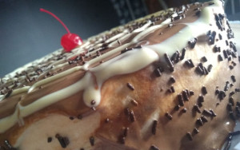

Receita - Torta Alemã

Torta Alemã
Ingredientes:
- 4 Creme de Leite lata(Nestlé);
- 2 de Biscoito de Maisena Recheado;
- 300g Manteiga sem sal (Piracanjuba ou (Nestlé);
- 400g de Açúcar Refinado (União);
- 200g Chocolate 1/2 Amargo(duas barras pequenas);
- 100g de chocolate Branco(1 barra);
- 3 caixinhas pequenas creme de leite (Nestlé);
- Essência de Baunilha;
- Rum;
- Chocolate Granulado, para decorar;
- Cereja com cabo ou morango para decorar;
Ultensílio:
- Batedeira comun;
- Uma panela média(para o banho maria);
- Duas panelas pequenas(para o banho maria);
- Um pão duro;
- Uma forma redonda medindo 25cm de diamento de fundo removivel;
- Papel Aluminio;
- Papel Filme.
Modo de Preparo:
Massa:
- Coloque as 4 latas de creme de leite na geladeira por pelo menos dois dias;
- Logo após esse período, separe o soro da nata e reserve na geladeira;
(Dica: vire as latas e abra elas para separar o soro que fica na parte de cima, é bem mais prático)
- Dissolva o chocolate em pó no soro com uma colher de café de baunilha e reserve;
- Forre a forma com papel alunior até encima nas bordas e reserve;
- Na batedeira, coloque a manteiga e o açúcar e bata suavemente até ficar uma massa espessa e esbranquiçada;
- Em seguida acrescente o açúcar até dobrar aumentar de tamanho a massa;
- Em seguida com a batedeira ligada ainda, acrescente 4 colheres de sopa de Rum,
2 colheres de café de esssência e disponha tudo na batedeira;
- Diponha no fundo da forma forrada uma camada de bicoitos até cobir o fundo;
- Encima coloque uma porção da massa até cobrir os biscoistos;
- Nas camadas umedeça o biscoito com o soro e cubra novamente com a massa;
- Repita até encima e depois passe o filme e leve ao congelador por 24h
- Após isso escolha a bandeja ou prato de vidro para colocar a torta;
- Despeje ganache de chocolate meio amargo e espalhe;
- Depois colocque o ganache de chocolate branco e polvilhe um pouco do
chocolate granulado;
- Finalize ao seu gosto com o morango cortado ao meio e/ou com as cerejas com cabo.
Ganache:
- Coloque na panela grande cerca de 1/3 do tamanho dela de água e leve ao fogo em fogo médio;
- Em uma panela menor, coloque o o chocolate meio amargo e a coloque no banho maria e mexa com o pão duro até amolecer;
7
- Em seguida acrescente uma caixinha de creme de leite e reserve;
- Repita o mesmo processo com o cholate branco.
Como servir servir:
- Sirva com uma bebida quente de preferencia meio amarga;
- Serve aproxidamente 10 à 15 fatias generosas.